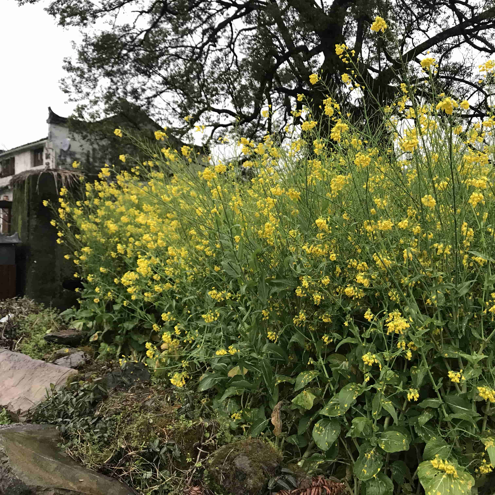
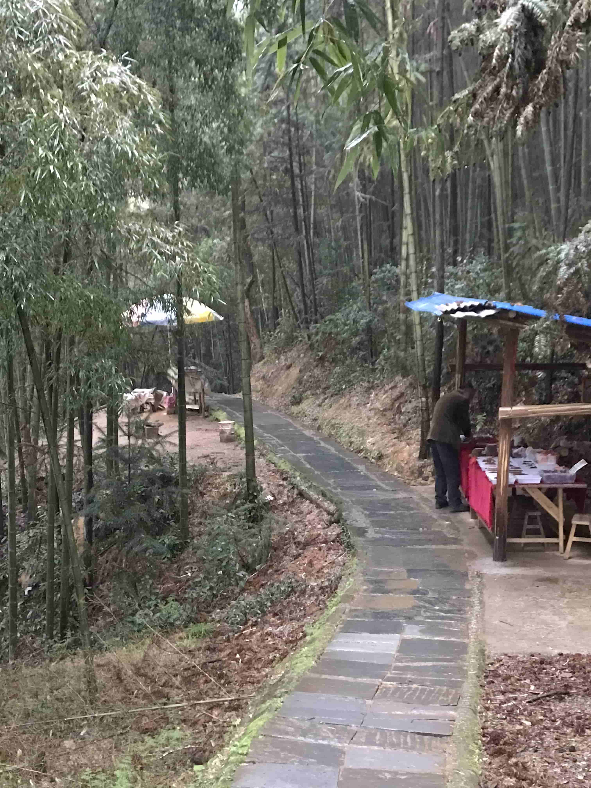
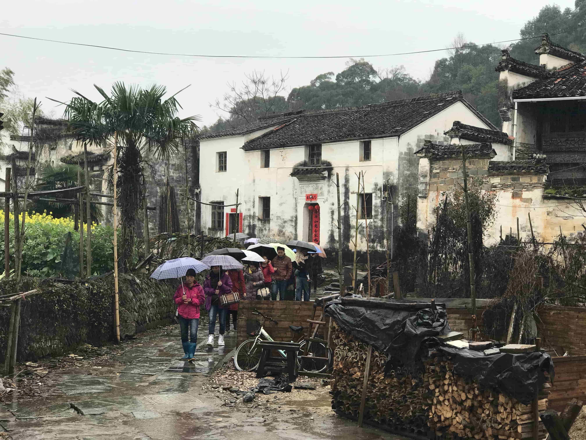
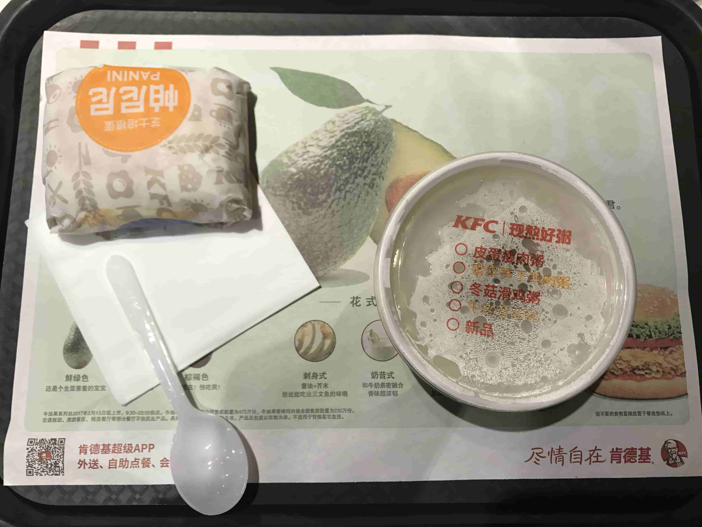

對於婺源的瞭解，源於我大學畢業旅行的選擇目的地，當時看到婺源的景色，就決定一定要和朋友去一次，可惜等到她要結婚了，我們一直也沒有時間可以去了，蠻可惜的。所以我寫游記是爲了記錄當時的游玩的狀況，爲了將來如果有機會再去的時候留一個參考，如果沒有機會了就當做回憶了！
此次行程中有許多的第一次（每一次旅途中都會許多的第一次），比如説：
- 第一次參加驢友團的長途活動（火車）
- 第一次乘坐火車過長江大橋
- 第一次去江西省
- 第一次近距離觀看熱氣球
- 第一次看見徽派建築和山水形成一種自然的風水畫
……
接下來我們來説我們的旅途吧，三宿兩天的旅途
- 2017年3月17日 夜宿在Z67北京西-九江的火車上
- 2017年3月18日 游玩曉起，江嶺，江灣，夜宿在李坑民宿中
- 2017年3月19日 游玩月亮灣，思溪延村，夜宿在Z72九江-北京的火車上
以上是我的實際旅程，實際上領隊計劃是第一游玩東綫——曉起，江嶺，江灣，月亮灣，李坑；第二天游玩北綫——思溪延村，彩虹橋，臥龍谷，嚴田古樟，按照計劃來講，我們實際完成60%左右，主要原因是天氣和時間上，游玩的兩天一直連續的陰雨天，時大時小，不好掌握，很符合烟花三月下江南的詩句，所以打算這個時節來江南游玩的話，一定要考慮下天氣的因素，另外一個原因就是領隊的時間把握不是很好，感覺路上都很急促，可能是由於領隊沒有來過婺源吧，衹是參考其他人攻略來説做的計劃吧！
好了，下面進入照片欣賞環節。
三月的婺源真的很美，春天盛開的油菜花，水墨丹青的建築，飄渺的雲烟構成了一副巨大的畫卷，照片衹能表達我看待景色的角度，如果不符合你的審美方式，還請您見諒。我的觀點是婺源的美體現在古老的人文、顔色畫面的渾然天成和同行的人。但此次婺源之旅也讓我真的瞭解了下面這句話：
你知道他們不是壞人。他們只是沒有受過教育，不諳世故，沒出過遠門，不道德，不文明，外加愚蠢 - 蒂姆·高特羅
沒有一次我比這次更傷心，如此優美的景色和白色垃圾混合在一起，本來是清澈的河水汎著油光，本來應該安寧祥和的村落，由於游客的到來，變爲了一個季節性的商業小鎮，看到這些我衹能說我以我的所做所爲來做我力所能及的改變。
好了，我們不談這些傷心的事情了，讓我來聊一些愉快的事情。首先我們來先吐槽一下北京西站的40元一套的牛肉麵套餐。
曉起村¶
早晨7：00我們從九江站乘坐租租賃的大巴車出發，前往我們今天的第一站——曉起村，我們需要在這裏做短暫休息，領取購買的門票，之後再前往今天的主要目的地——江嶺。在這裏我多說兩句，婺源的景點很分散，游客很集中，這樣帶來的麻煩就是交通不便，到哪裏都是人，所以非必要，强烈建議不要選擇周末來徽州游玩。
我在等待領隊拿票過程中隨手拍的路邊的油菜花，婺源真的可以説是十步一景。
據説下面這棵樹是曉起村最著名的景點——神樟。
這個可以說是曉起村的一角，全貌談不上，畢竟身在此山中，不知云深處，但曉起村給我的第一印象真的很不好，商業化嚴重，每一步都是一個店鋪，這也是婺源古村的一個悲劇吧！
要出曉起村，隨手拍了一張脚下的路和路邊的樟樹。
出曉起村，正好快中午了，早飯也沒有喫好，就在路邊隨意喫點當地的特色，可能是店鋪的原因吧，真心覺得不好喫！
喫完清明果和餛飩，看著時間尚早，我就隨意在路邊走走看看，看到鳥兒很漂亮，就偷拍了兩張，在北方，這個時節除了麻雀和喜鵲，我真的不知道還有什麽鳥了！
江嶺：青山梯田花海¶
中午在江嶺的農家院，大家AA喫了一些飯菜，做的還不錯，家裏的味道。
下面這個酒，老伯說是自家釀的米酒泡的紅杉子，但是酒中帶著少許辣味，不知道是不是蒸餾過，但味道嘗起來有一股水果的清香甜味，喝完不上頭。
和一幫子喫貨喫飯的後果就是，十道菜，我衹拍到兩道菜（紅燒紅鯉魚和梅菜扣肉），因爲我再拍照的話，中午我就要餓肚子了！
另外我在提一下，到你不熟悉的地方喫飯，點相同的菜名的菜，一定要問做法，一定要問做法，一定要問做法，重要的事情說三遍。
江嶺的景色可以説是婺源油菜花景色最好的地方之一，從江嶺向下看，層層梯田、曲折盤旋的山路、蜿蜒流淌的小溪，山谷中三、四個村莊，構成了一幅極美的婺源農村風光畫卷。
婺源的花不止有黃色的，還有粉色的，下面這個應該是桃花吧，我也不是很確定。
江灣¶
江灣，聽説是江澤民的老家，江澤民執政后，曾大修一番，但依稀殘留著文化大革命那場動亂留下的一些痕跡，但也很少了，大部分都已經整修過，樣子很古典，但已經不是千年古村的面目了。
這個地方可説是江灣重要的一景，畢竟一位領導人在此坐過，看望老師。
2001年5月30日上午,在江西考察工作的江澤民總書記來江灣,看望任教40年的退休老教師江啟昌,總書記與江老師親切交談,使江老師興奮不已,終生難忘。 “江啟昌宅”因此而得名。
這位年近九旬的退休老教師江啟昌，身體依然硬朗，精神矍爍，見到客人就熱情地訴說著那令他難忘的一幕。他的桌前擺放著不少折扇，有的墨跡尚未乾，可以看出都是由江老師自己寫的，遇到知己就訴説一下自己的設計理念：因江澤民屬虎，又是真命天子，故將“龍”和“虎”二字位居中央。從右往左、從上往下來看，第一行寫著“蕭江”，用來説明江澤民和江灣江傢的來歷——蕭何的後代；接下來是“龍騰新世紀”，是在誇獎江澤民——新世紀第一位國家領導人；再往右看：“虎躍步民昌”，這句也不用説了，也是在誇獎江總書記帶領人民走向繁榮昌盛，最後寫明時間（丁酉鷄年）和地點（江灣村）。最後，估計也是老先生最爲得意的一處吧，從最下面的一行從右往左看，正好是一句藏頭——“江啟昌書”，點明了作者。聽完老先生這番介紹感覺還是漫游意思的。
説實話我覺得江灣外這一遠眺的景色，要比江灣好看很多，可能是我對人文歷史不感興趣吧！
李坑：小橋流水人家¶
當我們到達李坑的時候，已經是晚上了，所以我們就先解決住宿和喫飯的問題了，晚上和司機大哥小酌了幾杯當地的特色白酒——四特酒。至於飯菜沒有拍的原因，我想你們應該是知道的——我真的太餓了，喫晚了，估計就什麽都沒有了。
李坑的夜景是不錯的，但是在李坑看到的悲傷。在這還發生點小插曲，喫完飯半個小時，全村就停電了，一直停到第二天凌晨，所以夜景照片很少。
早晨起來，走進村落，明清古建遍布，粉牆黛瓦，參差錯落;村內街巷溪水貫通，九曲十彎，青石板道縱橫交錯，構築一幅小橋，流水，人家的美麗畫卷。
李坑的建築風格大都是明清民居風格，是一組集贛中民居之精華，融木雕，石雕，磚雕，彩繪為一體的經典建築群，一腳踏進去，說不准就是某個朝代某人官家人，商賈豪富的深宅大院。不論是官家府邸還是普通民居，一只有從房子大小，磚雕門樓，木雕窗欄以及各種彩繪的精緻程度上，才能辨出當年主人的身份與家境。歲月的灰塵與時間的粘連，使這些明清百年老屋斑駁成一種古老深邃的寧靜與寂寞




估計這種行爲——侵鼠籠，一個孩子把這種滅絕生物的行爲當作是一場游戲，衹能說勝者爲王，敗者為寇！
在李坑感覺最有意思的還是這麽一群鴨子，有著王的蔑視首領，有著正在溪水中洗澡的愜意。


月亮灣：一灣春水碧綠¶
月亮灣是去往李坑半路上的一個小景點，因江河中有一個長長彎彎的小島，如一彎眉月而得名。從遠處眺望這小島，但見一灣春水碧綠，金黃的油菜花遍野盛開，江南小竹排於河邊搖晃，兩岸倒影在水中輕漾，美得內斂，沉靜，如江南小家女子，安隅於婺源。
因領隊給的時間，比較多，所以決定和同行的美女，打算下水坐坐竹筏，享受一下划竹筏的樂趣，並體會下被人當作畫中人的感受。
估計要沒有他，我的體重可能會把整個竹筏給弄沉了吧，現在想來也是自黑一下了！

有趣害羞的船夫大哥，希望有機會和你再相見！

思溪延村¶
可能是我更喜歡風景一些吧，也可能是突如其來的一張大雨把我游玩的好心情破壞了吧，也有可能是昨天看的太多了，衹是隨手拍了一些紀念景色，大家一起看看吧！

來到婺源，我建議大家可以去品嘗下正宗的江南果酒，比如這十五年的狀元紅口感醇厚、酸中帶甜，不管男女應該都很喜歡喝。
世上無不散的宴席，過往兩天的人與事，宛如夢中。

回歸正常生活的第一頓早餐，KFC活力早餐，沒辦法，馬上要去新國展，參加展會，路上沒有喫的，衹好凑合一口了！

最後，給大家簡單報下花銷，給以後的想去的人做個參考吧！全程共花費車票、車費、住宿（1000元）門票（180元）喫飯、酒錢（飯錢全程AA，酒錢單算，可以控制300以内）。